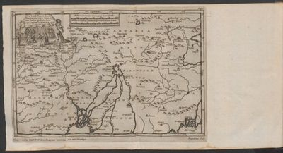

Account of a Mahometan merchant concerning Cambalu; together with the difficult journey of Benedict Goes, made from Lahore overland through Tartary to China in the year 1598 and following. Now for the first time translated from the Portuguese, enriched with engravings and an index. Accurate collection of the most memorable sea and land voyages to the East and West Indies ... from the year 1593 to 1599, by Goes and van der Aa, 1735. Image: e-rara. One of the 137 maps of Tartary in the TARTARY Project's collection at HKUST, catalogued on tartary.vercel.app. Its texts have not been transcribed yet.